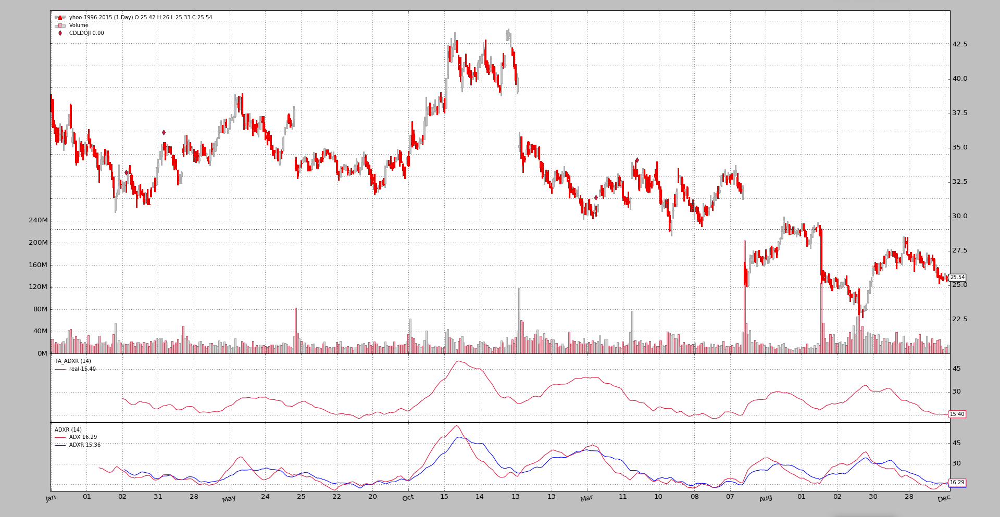

TA-Lib¶
Even if backtrader offers an already high number of built-in indicators and developing an indicator is mostly a matter of defining the inputs, outputs and writing the formula in a natural manner, some people want to use TA-LIB. Some of the reasons:
- Indicator X is in the library and not in backtrader (the author would gladly accept a request)
- TA-LIB behavior is well known and people trust good old things
In order to satisfy each and every taste, TA-LIB integration is offered.
Requirements¶
- Python wrapper for TA-Lib
- Any dependencies needed by it (for example numpy)
The installation details are on the GitHub repository
Using ta-lib¶
As easys as using any of the indicators already built-in in backtrader. Example of a Simple Moving Average. First the backtrader* one:
import backtrader as bt
class MyStrategy(bt.Strategy):
params = (('period', 20),)
def __init__(self):
self.sma = bt.indicators.SMA(self.data, period=self.p.period)
...
...
Now the ta-lib example:
import backtrader as bt
class MyStrategy(bt.Strategy):
params = (('period', 20),)
def __init__(self):
self.sma = bt.talib.SMA(self.data, timeperiod=self.p.period)
...
...
Et voilá! Of course the params for the ta-lib indicators are defined by the
library itself and not by backtrader. In this case the SMA in ta-lib
takes a parameter named timeperiod to defined the size of the operating
window.
For indicators that require more than one input, for example the Stochastic:
import backtrader as bt
class MyStrategy(bt.Strategy):
params = (('period', 20),)
def __init__(self):
self.stoc = bt.talib.STOCH(self.data.high, self.data.low, self.data.close,
fastk_period=14, slowk_period=3, slowd_period=3)
...
...
Notice how high, low and close have been individually passed. One
could always pass open instead of low (or any other data series) and
experiment.
The ta-lib indicator documentation is automatically parsed and added to the backtrader docs. You may also check the ta-lib source code/docs. Or adittionally do:
print(bt.talib.SMA.__doc__)
Which in this case outputs:
SMA([input_arrays], [timeperiod=30])
Simple Moving Average (Overlap Studies)
Inputs:
price: (any ndarray)
Parameters:
timeperiod: 30
Outputs:
real
Which offers some information:
- Which Input is to be expected (DISREGARD the ``ndarray`` comment because backtrader manages the conversions in the background)
- Which parameters and which default values
- Which outpu lines offers the indicator
Moving Averages and MA_Type¶
To select a specific moving average for indicators like bt.talib.STOCH,
the standard ta-lib MA_Type is accesible with
bactrader.talib.MA_Type. For example:
import backtrader as bt
print('SMA:', bt.talib.MA_Type.SMA)
print('T3:', bt.talib.MA_Type.T3)
Plotting ta-lib indicators¶
Just as with regular usage, there is nothing special to do to plot the ta-lib indicators.
Note
Indicators which output a CANDLE (all those looking for a
candlestick pattern) deliver a binary output: either 0 or 100. In
order to avoid adding a subplot to the chart, there is an
automated plotting translation to plot them over the data at the
point in time in which the pattern was recognized.
Examples and comparisons¶
The following are plots comparing the outputs of some ta-lib indicators against the equivalent built-in indicators in backtrader. To consider:
- The ta-lib indicators get a
TA_prefix on the plot. This is specifically done by the sample to help the user spot which is which- Moving Averages (if both deliver the same result) will be plotted ON top of the other existing Moving Average. The two indicators cannot be seen separately and the test is a pass if that’s the case.
- All samples include a
CDLDOJIindicator as a reference
KAMA (Kaufman Moving Average)¶
This is the 1st example because it is the only (from all indicators which the sample directly compare) that has a difference:
- The initial values of the the samples are not the same
- At some point in time, the values converge and both KAMA implementations have the same behavior.
After having analyzed the ta-lib source code:
The implementation in ta-lib makes a non-industry standard choice for the 1st values of the KAMA.
The choice can be seen in the source code quoting from the source code): The yesterday price is used here as the previous KAMA.
backtrader does the usual choice which is the same as for example the one from Stockcharts:
Since we need an initial value to start the calculation, the first KAMA is just a simple moving average
Hence the difference. Furthermore:
- The ta-lib
KAMAimplementation doesn’t allow specifying thefastandslowperiods for the adjustment of the scalable constant defined by Kaufman.
Sample execution:
$ ./talibtest.py --plot --ind kama
Output


AROON¶
Note that ta-lib chooses to put the down line first and the colours are inverted when compared with the backtrader built-in indicator.
$ ./talibtest.py --plot --ind aroon
Output


ADXR¶
Here backtrader offers both the ADX and ADXR lines.
$ ./talibtest.py --plot --ind adxr
Output

PPO¶
Here backtrader offers not only the ppo line, but a more traditional
macd approach.
$ ./talibtest.py --plot --ind ppo
Output

ROC¶
All indicators show have exactly the same shape, but how to track momentum or rate of change has several definitions
$ ./talibtest.py --plot --ind roc
Output

Sample Usage¶
$ ./talibtest.py --help
usage: talibtest.py [-h] [--data0 DATA0] [--fromdate FROMDATE]
[--todate TODATE]
[--ind {sma,ema,stoc,rsi,macd,bollinger,aroon,ultimate,trix,kama,adxr,dema,tema,ppo,williamsr,roc}]
[--no-doji] [--use-next] [--plot [kwargs]]
Sample for sizer
optional arguments:
-h, --help show this help message and exit
--data0 DATA0 Data to be read in (default:
../../datas/yhoo-1996-2015.txt)
--fromdate FROMDATE Starting date in YYYY-MM-DD format (default:
2005-01-01)
--todate TODATE Ending date in YYYY-MM-DD format (default: 2006-12-31)
--ind {sma,ema,stoc,rsi,macd,bollinger,aroon,ultimate,trix,kama,adxr,dema,tema,ppo,williamsr,roc}
Which indicator pair to show together (default: sma)
--no-doji Remove Doji CandleStick pattern checker (default:
False)
--use-next Use next (step by step) instead of once (batch)
(default: False)
--plot [kwargs], -p [kwargs]
Plot the read data applying any kwargs passed For
example (escape the quotes if needed): --plot
style="candle" (to plot candles) (default: None)
Sample Code¶
from __future__ import (absolute_import, division, print_function,
unicode_literals)
import argparse
import datetime
import backtrader as bt
class TALibStrategy(bt.Strategy):
params = (('ind', 'sma'), ('doji', True),)
INDS = ['sma', 'ema', 'stoc', 'rsi', 'macd', 'bollinger', 'aroon',
'ultimate', 'trix', 'kama', 'adxr', 'dema', 'ppo', 'tema',
'roc', 'williamsr']
def __init__(self):
if self.p.doji:
bt.talib.CDLDOJI(self.data.open, self.data.high,
self.data.low, self.data.close)
if self.p.ind == 'sma':
bt.talib.SMA(self.data.close, timeperiod=25, plotname='TA_SMA')
bt.indicators.SMA(self.data, period=25)
elif self.p.ind == 'ema':
bt.talib.EMA(timeperiod=25, plotname='TA_SMA')
bt.indicators.EMA(period=25)
elif self.p.ind == 'stoc':
bt.talib.STOCH(self.data.high, self.data.low, self.data.close,
fastk_period=14, slowk_period=3, slowd_period=3,
plotname='TA_STOCH')
bt.indicators.Stochastic(self.data)
elif self.p.ind == 'macd':
bt.talib.MACD(self.data, plotname='TA_MACD')
bt.indicators.MACD(self.data)
bt.indicators.MACDHisto(self.data)
elif self.p.ind == 'bollinger':
bt.talib.BBANDS(self.data, timeperiod=25,
plotname='TA_BBANDS')
bt.indicators.BollingerBands(self.data, period=25)
elif self.p.ind == 'rsi':
bt.talib.RSI(self.data, plotname='TA_RSI')
bt.indicators.RSI(self.data)
elif self.p.ind == 'aroon':
bt.talib.AROON(self.data.high, self.data.low, plotname='TA_AROON')
bt.indicators.AroonIndicator(self.data)
elif self.p.ind == 'ultimate':
bt.talib.ULTOSC(self.data.high, self.data.low, self.data.close,
plotname='TA_ULTOSC')
bt.indicators.UltimateOscillator(self.data)
elif self.p.ind == 'trix':
bt.talib.TRIX(self.data, timeperiod=25, plotname='TA_TRIX')
bt.indicators.Trix(self.data, period=25)
elif self.p.ind == 'adxr':
bt.talib.ADXR(self.data.high, self.data.low, self.data.close,
plotname='TA_ADXR')
bt.indicators.ADXR(self.data)
elif self.p.ind == 'kama':
bt.talib.KAMA(self.data, timeperiod=25, plotname='TA_KAMA')
bt.indicators.KAMA(self.data, period=25)
elif self.p.ind == 'dema':
bt.talib.DEMA(self.data, timeperiod=25, plotname='TA_DEMA')
bt.indicators.DEMA(self.data, period=25)
elif self.p.ind == 'ppo':
bt.talib.PPO(self.data, plotname='TA_PPO')
bt.indicators.PPO(self.data, _movav=bt.indicators.SMA)
elif self.p.ind == 'tema':
bt.talib.TEMA(self.data, timeperiod=25, plotname='TA_TEMA')
bt.indicators.TEMA(self.data, period=25)
elif self.p.ind == 'roc':
bt.talib.ROC(self.data, timeperiod=12, plotname='TA_ROC')
bt.talib.ROCP(self.data, timeperiod=12, plotname='TA_ROCP')
bt.talib.ROCR(self.data, timeperiod=12, plotname='TA_ROCR')
bt.talib.ROCR100(self.data, timeperiod=12, plotname='TA_ROCR100')
bt.indicators.ROC(self.data, period=12)
bt.indicators.Momentum(self.data, period=12)
bt.indicators.MomentumOscillator(self.data, period=12)
elif self.p.ind == 'williamsr':
bt.talib.WILLR(self.data.high, self.data.low, self.data.close,
plotname='TA_WILLR')
bt.indicators.WilliamsR(self.data)
def runstrat(args=None):
args = parse_args(args)
cerebro = bt.Cerebro()
dkwargs = dict()
if args.fromdate:
fromdate = datetime.datetime.strptime(args.fromdate, '%Y-%m-%d')
dkwargs['fromdate'] = fromdate
if args.todate:
todate = datetime.datetime.strptime(args.todate, '%Y-%m-%d')
dkwargs['todate'] = todate
data0 = bt.feeds.BacktraderCSVData(dataname=args.data0, **dkwargs)
cerebro.adddata(data0)
cerebro.addstrategy(TALibStrategy, ind=args.ind, doji=not args.no_doji)
cerebro.run(runcone=not args.use_next, stdstats=False)
if args.plot:
pkwargs = dict(style='candle')
if args.plot is not True: # evals to True but is not True
npkwargs = eval('dict(' + args.plot + ')') # args were passed
pkwargs.update(npkwargs)
cerebro.plot(**pkwargs)
def parse_args(pargs=None):
parser = argparse.ArgumentParser(
formatter_class=argparse.ArgumentDefaultsHelpFormatter,
description='Sample for sizer')
parser.add_argument('--data0', required=False,
default='../../datas/yhoo-1996-2015.txt',
help='Data to be read in')
parser.add_argument('--fromdate', required=False,
default='2005-01-01',
help='Starting date in YYYY-MM-DD format')
parser.add_argument('--todate', required=False,
default='2006-12-31',
help='Ending date in YYYY-MM-DD format')
parser.add_argument('--ind', required=False, action='store',
default=TALibStrategy.INDS[0],
choices=TALibStrategy.INDS,
help=('Which indicator pair to show together'))
parser.add_argument('--no-doji', required=False, action='store_true',
help=('Remove Doji CandleStick pattern checker'))
parser.add_argument('--use-next', required=False, action='store_true',
help=('Use next (step by step) '
'instead of once (batch)'))
# Plot options
parser.add_argument('--plot', '-p', nargs='?', required=False,
metavar='kwargs', const=True,
help=('Plot the read data applying any kwargs passed\n'
'\n'
'For example (escape the quotes if needed):\n'
'\n'
' --plot style="candle" (to plot candles)\n'))
if pargs is not None:
return parser.parse_args(pargs)
return parser.parse_args()
if __name__ == '__main__':
runstrat()


{kind=link}
{kind=link}
{kind=link}
{kind=link}
{kind=link}
{kind=link}
{kind=link}
{kind=link}